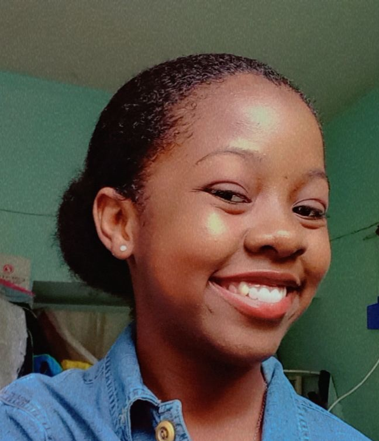

Étudiante en L2 à l'ESIH, co-auteur du site web KANAKA Electronics S.A et passionnée par la cyber-sécurité. Adepte enthousiaste de la résolution de casse-têtes complexes, elle aspire à mettre ses compétences au service de la sécurité informatique et recherche activement des opportunités dans ce domaine fascinant.
JOSEPH Scarline

Etudiant en L2 à l'ESIH, co-auteur du site web KANAKA Electronics S.A, architecte du numérique en devenir, et passionné de conceptions et techniques visuelles dans le domaine des jeu-vidéos et de l'animation. Il espère actuellement pouvoir trouver de temps en temps des débouchés dans ce genre de domaine.
CESAR Yves Angello

Etudiante à L'ESIH actuellement en L2. Elle est l'une des créatrices de kanaka électronics S.A. Passionnée par l'informatique, elle est une développeuse créative et innovante. elle s'épanouit dans des environnements collaboratifs et est constamment à la recherche de nouvelles opportunités pour apprendre et grandir.
ESTRAL Santiara Joany